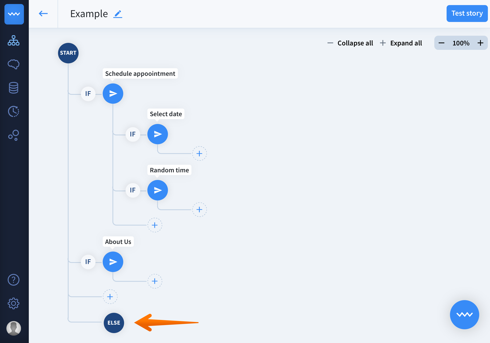
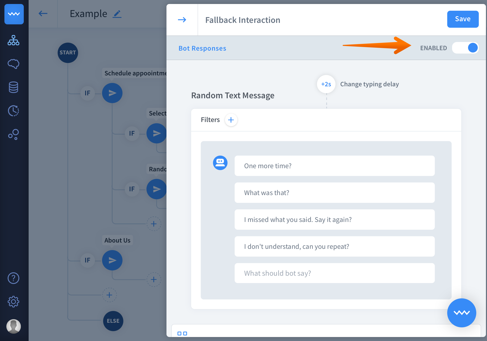

Last update:
Fallback interaction is a default interaction that pops up when the bot doesn’t recognize the user’s input.
The fallback interaction controls the conversation flow by showing a general message when the bot cannot match the user query with any of the interaction. The interaction prompts the user suggesting rewording the phrase, showing possible options or performing specific actions.
You can modify the fallback interaction and add multiple actions and responses together with filters and attributes. The behavior of fallback interaction is directly related to Lifespan settings and Confidence Score.
How does it work
- Fallback interaction fires up when the bot is unable to match any interaction.
- The number of fallbacks triggered in one chat depends on the lifespan settings.
- At the story levels where the context fallback lives on, the general default fallback doesn’t fire up.
- One story can have maximum one fallback interaction.
- You can freely modify and add bot responses and actions in this interaction.
- The user says section isn’t available in the fallback interaction.
- Fallback interaction can be disabled.
How to turn off the fallback interaction
By default, the Fallback Interaction is enabled. Follow these steps to disable it:
- Go to your story view and select the fallback interaction. Remember that default interactions can be always found below all other interactions. 
- Use the toggle switch to disable the default interaction. 
- Click save to keep your work. To enable this interaction again, follow the same steps as above and choose Enable button.
Default interactions are optional, use the roggle to enable and disable them, depending on your needs.